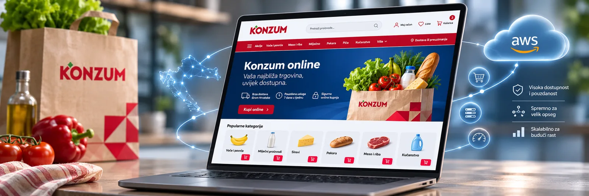

Commerce infrastructure on AWS
Linking cloud migration work with the needs of a large retail eCommerce operation.
PlatformsIntegrationsDelivery

01
The challenge
Moving an online retail solution into cloud infrastructure meant understanding operational requirements and dependencies, not just servers.
02
Why it mattered
Infrastructure decisions affect business continuity, integration complexity and future platform evolution.
03
My role
- Member of the cross-functional migration initiative
- Project manager for the IT / business requirements scope
04
What I did
- Defined business and logistics needs relevant to the new infrastructure
- Researched expected operational implications of cloud adoption
- Coordinated internal and external technical teams
05
What came out of it
- Contributed to preparation and coordination of the commerce-platform migration initiative
06
My takeaway
Cloud strategy matters most when expressed in business and operational requirements.
GOOD THINGS START WITH A CONVERSATIONHave a complex idea?
Have a complex idea?
Let’s make it work.
Open to senior Product, Delivery, eCommerce and Digital Transformation opportunities — where business, technology and people need to work together.